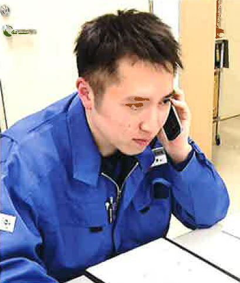
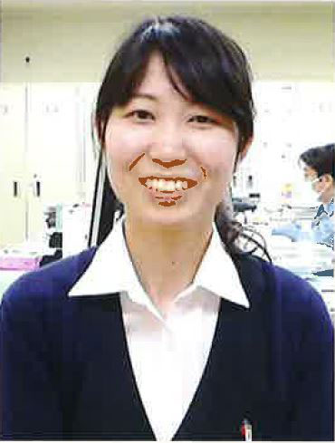
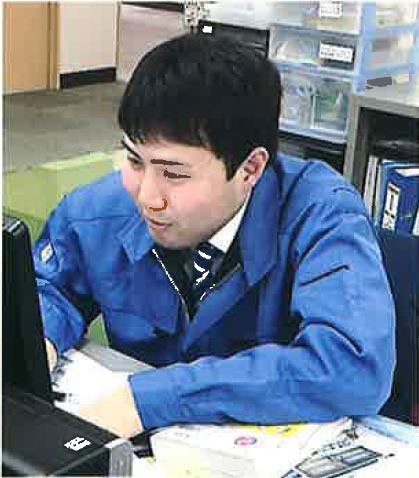

社員インタビュー
（総合職）INTERVIEW 02
- HOME
- 社員インタビュー（総合職）
社員インタビュー～総合職編～
より良い生産計画づくりに取り組んでいます。
弘前工場 生産管理係
弘前大学理工学部 物質創成科学科 卒
2016年入社

生産管理とは、文字通り生産を管理する部署です。日々受ける注文に合わせ生産スケジュールを作成します。また、生産に必要な樹脂の発注と管理も行っています。生産スケジュールの調整はひとりでできるものではなく、他部署との連携が大事です。効率の良い生産ができるように、コミュニケーションを多く取るようにしています。
ある製品の生産予定にトラブルが起き調整したら、他の製品の生産に影響することが多く、調整が難しいです。万一に備えた計画をあらかじめ組むのは大変な一方で、計画通り進んだら達成感があります。
まずは社内で生産している製品について、ひと通り生産計画を組めるようにするのが目標です。大学での専攻は分析化学で、現在の職種とは直接関係しませんが、データをまとめるなど当時の勉強で培った手法が役立っていると思います。
就職活動の際には、専攻分野以外にもぜひ視野を広く持って、さまざまな職種を見てほしいです。
三光化成は親しみやすい社員が多く、会社側も社員の要望を聞いてくれる柔軟性があると感じます。また、現在知識がなくても入社後に学ぶことが可能で、サポートも充実しています。きっと、自分に合った仕事が見つかるはずです。
幅広い総務業務を覚えていきたいです。
管理部 総務課
聖心女子大学文学部 歴史社会学科 卒
2016年入社

総務の仕事は一言で説明できないほど多様です。私が現在担当しているのは給与支給のための勤怠集計、福利厚生の持株会業務、現金出納などになります。勤怠集計は社員の勤務実績を確認し、給与計算の資料となるものです。社員のお給料に関わる重要な業務で、小さなミスも許されません。他に契約書や小口現金の取り扱いなど責任ある仕事が多いですが、間違いなく遂行できたときにはやりがいを感じます。
総務は机に座っているだけでなく、会議や研修の準備、ときには求人活動のお手伝いをすることもあり、意外と活動的です。また人事など「人」と関わって成り立つ仕事も多く、各工場の事務担当者とは毎日のように電話をしています。そうした関わりにも楽しさがあると思います。
私が経験している業務は総務のまだごく一部に過ぎません。今後は他の業務もひと通り覚えていき、かつ仕事に活かせる資格を取得してみたいです。三光化成には資格を取るための外部研修や自己啓発への補助制度もあるので、活用したいと思っています。
学生時代の専攻は近世の日本史でした。不明なところは史料を調べて勉強するという方法が、今の業務にも活きているのではないでしょうか。就職活動においては、自分が軸とするものを重視しながら納得のいく進路を見つけられれば良いと思います。
いつも現場に足を運ぶことが大事です。
第三事業部（一関）営業課
岩手大学工学部 応用化学・生命工学科 卒
2017年入社

現在は営業担当のアシスタント業務を中心に行っていて、書類作成やお客様との窓口対応などが主な業務です。最近ではRPAという事務作業の無人化に関するシステム構築プロジェクトも担当しています。
営業はお客様と直接お話をする部署で、お客様にとっては会社を代表する立場になります。従って、営業的な知識だけでなく射出成形その他の技術的な専門性、そして工場の状況などあらゆる情報を常に頭に入れておかないといけません。最初はどう対処していいかわからないことが多々ありましたが、研修への参加や工場現場で実際に問題点を確認するという努力を続けたおかげで、以前よりも上司の力を借りずに対応できるようになったと感じています。
今後はキャリアを高めるため、今の業務に習熟するだけでなく幅広い知識を習得したいです。また、積極的に現場に赴くことが大事だと思っています。三光化成では現場・現物・現実を重視する「三現主義」が徹底されています。現場を知らなければ本当の意味で良い仕事ができないのは、営業をはじめとした事務系部署も同じです。
当社では私のような理系の出身でも営業に配属となる場合があります。未知の職種でしたが、いざやってみると面白いことが多いです。自分の可能性を狭めてはいけないな、と今は考えています。